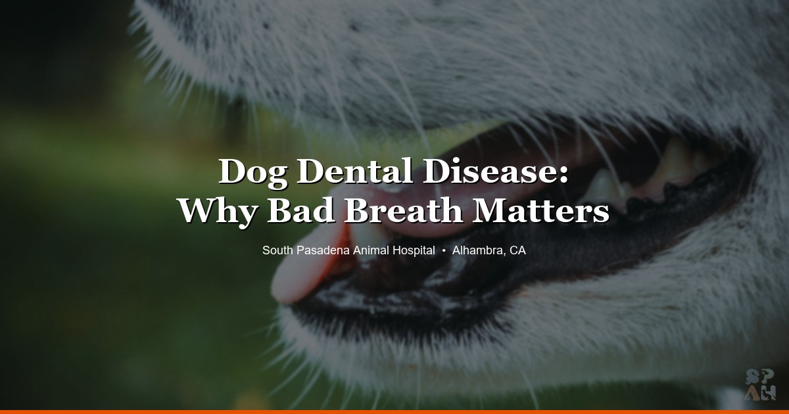

April 8, 2026 · 9 min read
Your Dog's Bad Breath Isn't Normal — Here's What It Actually Means 🦷

Every single week, someone brings in their dog for something unrelated — a limp, an ear infection, a weird bump — and during the exam we open their mouth and find a disaster. Tartar caked on the back molars. Gums that bleed when you touch them. Teeth that are loose.
And the owner says the same thing every time: "Oh yeah, his breath has been bad for a while, but I figured that's just how dogs smell."
It's not. Healthy dogs don't have breath that makes you turn your head. A little "dog breath" after eating? Sure. But that sour, rotten smell that hits you from across the room? That's infection. That's disease. And by the time you're noticing it, it's usually been building for months.
What Dental Disease Actually Looks Like
Most dog owners never look in their dog's mouth. And honestly, we get it — it's not easy, and a lot of dogs aren't thrilled about it. But that's part of the problem. Dental disease progresses silently, and dogs are remarkably good at hiding oral pain.
Here's what we actually see during exams at our Alhambra clinic:
- Tartar buildup — that brownish-yellow crust along the gum line, especially on the upper back molars. Starts as soft plaque, hardens within days.
- Gingivitis — red, swollen gum lines that bleed easily. This is the early stage, and it's reversible with a proper cleaning.
- Periodontal disease — once the infection gets below the gum line and starts eating away at the bone and ligaments that hold teeth in place. This is the stage where teeth get loose. This is not reversible — you can only manage it.
- Fractured teeth — we see this a lot in dogs who chew rocks, antlers, or hard bones. A slab fracture on a carnassial tooth (the big upper premolar) is one of the most common things we deal with. Owners don't even know it happened.
By the time bad breath is obvious, we're usually looking at stage two or three periodontal disease. The damage has been happening under the surface for a while.
Why It Matters Beyond the Mouth
This is the part that catches people off guard. Dental disease isn't just a mouth problem.
When there's active infection in the gums — and with periodontal disease, there almost always is — bacteria enters the bloodstream every time your dog chews. Every single meal. That bacteria circulates and has been linked to damage in the heart, kidneys, and liver. There's solid research on this in both human and veterinary medicine.
We're not trying to scare you into a dental cleaning. But this is genuinely one of those things where prevention costs a fraction of what treatment costs down the road. A dog that gets regular cleanings and has tartar managed early might never need a single extraction. A dog that goes five or six years without anyone looking at their teeth? We've pulled ten, twelve teeth in a single procedure on dogs like that. It's not fun for anyone.
What a Dental Cleaning Actually Involves
There's a lot of confusion about this, so let's walk through it.
Yes, we use general anesthesia. Always. There's no way around this for a real dental cleaning. The dog needs to be still, intubated (a tube in the airway to protect the lungs from water and debris), and pain-free. We need to probe every tooth, get under the gum line, and take dental X-rays if needed. None of that happens on an awake dog.
Here's what the procedure looks like:
- Pre-anesthetic bloodwork — we run this beforehand to screen for kidney, liver, or other issues that could affect how your dog handles anesthesia. Non-negotiable.
- Full oral exam under anesthesia — we probe every single tooth, check pocket depths, look for fractures, note any masses or abnormalities. This is impossible on an awake patient.
- Scaling — ultrasonic cleaning to remove tartar above and below the gum line. Below the gum line is where it counts.
- Polishing — smooths the enamel surface after scaling so plaque has a harder time sticking.
- Extractions — if teeth are too far gone (loose, fractured, severely infected), they come out. We always discuss this with you first when possible.
A word about anesthesia safety: modern veterinary anesthesia is very safe. We monitor heart rate, blood pressure, oxygen levels, CO2, and temperature throughout the entire procedure. The risks of leaving dental disease untreated are genuinely higher than the risks of anesthesia for most dogs.
The Most Common Mistakes We See
We've been doing this long enough to see the same patterns over and over. Here are the big ones:
Thinking bad breath is normal. It's not. We've said it already but it bears repeating. "Dog breath" as a concept has somehow convinced people that their dog's mouth is supposed to smell terrible. A healthy mouth has minimal odor.
Buying dental treats and thinking that's enough. Greenies are fine as a supplement. Dental chews can help reduce some plaque buildup. But they're not a substitute for actual dental care, just like chewing gum doesn't replace brushing your own teeth. We see dogs in South Pasadena and Pasadena who get a Greenie every single day and still have stage three periodontal disease.
Waiting until the dog stops eating. By the time a dog refuses food because of mouth pain, things are severe. Dogs will eat through an unbelievable amount of dental pain before they finally stop. We've seen dogs with multiple loose teeth, abscessed roots, and visibly swollen gums still eating kibble. If your dog stops eating, the mouth is in serious trouble.
Doing anesthesia-free dentals. This one needs its own paragraph. Anesthesia-free dental cleanings — sometimes marketed as "gentle cleanings" or "awake dentals" — are cosmetic at best. They scrape the visible tartar off the front of the teeth. That's it. They can't get below the gum line, which is where periodontal disease actually lives. They can't probe teeth. They can't take X-rays. They can't address anything meaningful. Your dog's teeth look whiter afterward, but the actual disease is untouched. It's like painting over rust.
When to Actually Come In
Not everything needs an immediate visit. Here's how we'd break it down:
Monitor at home:
- Mild tartar on the back teeth, breath is a bit off but your dog is eating normally and acting fine
- You just noticed some yellowish buildup — mention it at your next wellness exam
Come in soon (within a week or two):
- Red or swollen gums, especially along the gum line
- Consistent bad breath that's getting worse
- Brown or yellow buildup that's clearly been there a while
- Pawing at the mouth or rubbing their face on furniture
- Drooling more than usual
Come in now — don't wait:
- A loose or broken tooth
- Bleeding from the mouth
- Swelling on one side of the face or under the eye (tooth root abscess)
- Stopped eating or only eating on one side
- Discharge from the nose on one side (can indicate an upper tooth root pushing into the nasal cavity)
We get a lot of calls from Highland Park and San Gabriel pet owners who aren't sure if something warrants a visit. When in doubt, just call us. Our front desk can usually help you figure out the urgency over the phone.
Let's Talk Cost
We're not going to pretend dental cleanings are cheap. They're not. Anesthesia, monitoring, scaling, polishing — it takes time and it takes proper equipment. But here's the math that matters: a routine dental cleaning is significantly less expensive than dealing with multiple extractions, antibiotics, pain management, and follow-up visits for a mouth that's been neglected for years.
We see this all the time. Someone puts off a dental for two or three years because of the cost, then ends up paying three times as much when their dog finally needs six teeth pulled and a course of antibiotics for a jaw infection. Prevention is always cheaper than treatment. Always.
Check our pricing page for current rates. And if cost is a concern, talk to us — we can help you prioritize and figure out a plan.
Your Dog's Mouth Deserves a Look
We see dogs from all over the San Gabriel Valley at our Alhambra clinic — Alhambra, South Pasadena, Pasadena, San Gabriel, Highland Park, and beyond. Dental disease is hands down one of the most common things we diagnose, and one of the most preventable.
If your dog's breath has been getting worse, or you genuinely can't remember the last time someone looked at their teeth, book a wellness exam and we'll take a look. It's a quick check during a regular visit, and catching things early makes all the difference.
Your dog can't tell you their mouth hurts. But their breath is trying to.